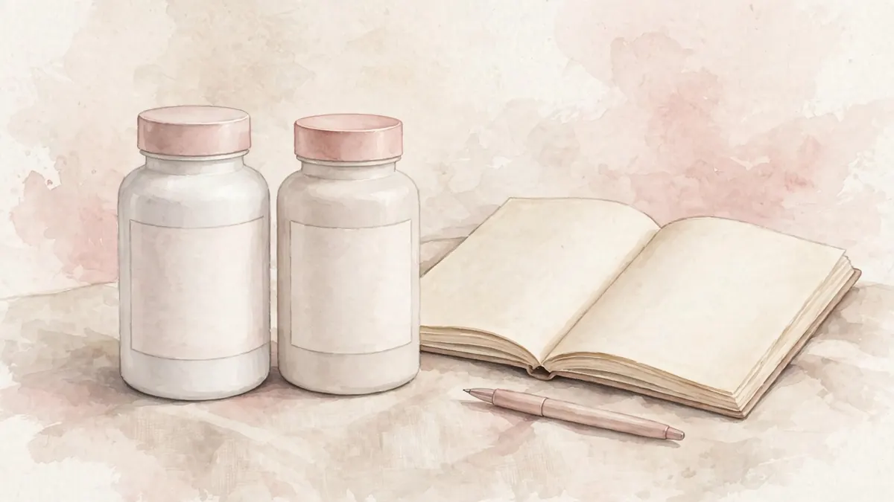

トップ ＞ インナーケア・サプリ ＞ 成分名の表記ゆれ：同じ成分の別名の見方
成分名の表記ゆれ：同じ成分の別名の見方

複数のサプリメントの表示を並べて読んでいると、「この成分とあの成分は、同じものなのか、別のものなのか」で迷うことがあります。成分の名前は、表示される場所によって書き方が違うことがあるためです。この記事では、成分名の表記ゆれの見方を整理します。
原材料名と栄養成分表示では、名前の役割が違う
パッケージ裏には、原材料名の欄と、栄養成分表示の欄があります。原材料名は「材料として何を使ったか」を書く欄で、素材そのものの名前が並びます。一方、栄養成分表示は「成分として何がどれくらい含まれるか」を書く欄です。この役割の違いから、同じ成分でも、欄によって名前の書き方が異なる場合があります。
たとえば、原材料名では素材の名前で書かれ、栄養成分表示では成分の名前で書かれる、という具合です。名前が違って見えても、同じ成分を指していることがあります。逆に、名前が似ていても別の成分の場合もあります。見た目だけで決めつけず、確認する姿勢が大切です。
括弧書きと単位も、読み合わせのポイント
原材料名の中には、名前の後ろに括弧書きが添えられていることがあります。由来する素材や、一部の原材料の説明が書かれているもので、成分の素性を知る手がかりになります。また、含有量の単位は、mg（ミリグラム）とμg（マイクログラム）が混在します。1mgは1000μgですから、単位をそろえずに数字だけを比べると、量の見方を間違えます。
並べて比べるときは、「成分の名前」「単位」「1日分あたりかどうか」の3点をそろえるのが基本です。この作業をしておくと、複数の商品で成分が重なっているかどうかの確認が、ぐっと確実になります。
分からない名前は、書き出して窓口で確認
表記ゆれの確認で頼りになるのが、手書きのメモです。手持ちの商品ごとに、成分名と量を書き出して並べると、名前の違いと重なりが目で見て分かります。それでも判断がつかない名前は、販売者の相談窓口で「この表記は、こちらの成分と同じですか」と具体的に聞くことができます。
成分名の表記ゆれは、表示のルールの中での書き方の違いです。読み方を知っていれば、併用の確認や買い替えの比較で迷う場面が減ります。表示を並べて読む習慣の延長として、ぜひ取り入れてみてください。
英語表記や略称のゆれもある
表記ゆれは、英語表記と日本語表記の間でも起こります。輸入品や、国際的に流通している成分では、パッケージに英語の成分名が併記されていたり、略称で書かれていたりすることがあります。読み慣れない名前は、メーカーの公式ページの成分情報と照らし合わせると、対応関係が分かることがあります。
窓口で確認するときは、「原材料名にある○○と、栄養成分表示の△△は同じ成分ですか」というように、具体的な名前を挙げて聞くと、答えが返ってきやすくなります。表記ゆれの確認は、併用時の重なりチェックの精度を上げる作業です。表示を並べる、単位をそろえる、分からない名前は聞く。この3つの手順を覚えておいてください。
買い替えのときも同じ手順が使えます。新旧の商品の成分名を書き出して並べれば、続ける成分と入れ替わる成分が見えてきます。名前の見た目に惑わされず、表示の役割の違いから読むことが、表記ゆれとの付き合い方です。
書き出したメモは、買い替えや併用の見直しのたびに使い回せます。新しい商品を足すときは、メモに一行追加して重なりを確認するだけです。表示を読む作業を一度仕組みにしてしまえば、その後の確認は短い時間で済むようになります。
成分名の知識を増やすこと自体が目的ではありません。自分の手持ちについて、重なりと総量を確かめられること。それが、表記ゆれの読み方を身につける目的です。
セラフィナ「名前が違って見えても、同じ成分のことがあるんだね。並べて書くと見えてくるよ」